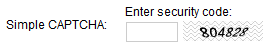
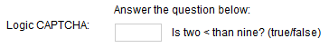
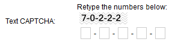
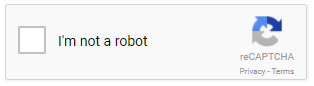

Spam protection (CAPTCHA)
Kentico allows you to protect your website from automated spam bots. You can secure all forms where users enter data, by requiring users to type a security code called CAPTCHA.
You can use CAPTCHA to tell humans and computers apart in the following places:
Blog comments
Custom tables
Page types
Forms
Forums
Message boards
Other web parts that allow user input
Changing the default CAPTCHA type
You can choose which CAPTCHA type the system uses:
We recommend using reCAPTCHA or Logic CAPTCHA, as these are the most secure CAPTCHA types.
Simple – prompts users to retype a sequence of numbers from an image.

Simple CAPTCHA
Logic – asks users to solve a simple arithmetic problem or to compare two numbers. Example: "one + four"; "Is six > than eight? (true/false)"

Logic CAPTCHA
Text – prompts users to retype a sequence of numbers, each number into an individual box.

Text CAPTCHA
reCAPTCHA – uses a web service that provides images of words that users have to retype.

reCAPTCHATo use reCAPTCHA, you need to apply hotfix 11.0.10 or newer, and perform the required configuration.
The default CAPTCHA type is Simple. To change the default type:
Open the Settings application.
Navigate to the Security & Membership -> Protection settings category.
Under CAPTCHA settings, select a Control to use.
Save the settings.
When you change the CAPTCHA type, all web parts and features that have CAPTCHA enabled use the new type. Also, all fields in custom tables, page types, and forms that use the Security code form control, use the new type of CAPTCHA. Fields that use a specific CAPTCHA control do not change.
Configuring reCAPTCHA
Important
The initial reCAPTCHA implementation in Kentico 11 uses the reCAPTCHA v1 API, which no longer works after March 31, 2018.
To use reCAPTCHA, you need to download and apply hotfix 11.0.10 or newer, which updates the system to use reCAPTCHA v2.
ReCAPTCHA is an online service which allows your application to tell apart humans and computers. ReCAPTCHA requires users to click a checkbox indicating they are not a robot. This either passes the user immediately or challenges them to validate whether or not they are human (using an additional image selection or audio test).
You need to register your site to use the reCAPTCHA API and obtain a pair of API keys:
Go to https://www.google.com/recaptcha/admin and sign in with your Google account.
Select the reCAPTCHA V2 type (other reCAPTCHA types are not supported by default).
Fill in all required details, including the domain where your site is running.
Copy your Site key and Secret key.
Next, enter your site's reCAPTCHA API keys into Kentico:
Open the Settings application.
Navigate to the Security & Membership -> Protection settings category.
Under CAPTCHA settings, paste the API keys into the reCAPTCHA site key and reCAPTCHA secret key settings respectively.
Save the settings.
Tip: If you run multiple sites in your Kentico instance, you can switch between them using the Site selector and enter different API keys for each site.
With the API keys entered into the system, you can select reCAPTCHA as the default CAPTCHA type (via the Control to use setting).
You can also create verification fields in page types, forms or custom tables using the reCAPTCHA form control. In this case, the form control allows you to configure additional settings for the specific field:
Control theme – sets the appearance of the reCAPTCHA element (Light or Dark).
Type – sets the type of challenge used if the initial noCAPTCHA validation fails (Image or Audio).
Size – sets the size of the reCAPTCHA element (Normal or Compact).
Using multiple reCAPTCHAs on the same page
The system does not support the use of multiple reCAPTCHA fields within the same form. You can have multiple different forms with a reCAPTCHA field on the same page, but successful validation for one form also automatically validates the others.
Customizing reCAPTCHA messages
If you wish to change the error messages that reCAPTCHA displays to users, create custom resource strings with the appropriate keys and enter the required text content as the translation values for specific cultures.
Use the following resource string keys for error messages related to basic verification:
recaptcha.error.missing-input-response – displayed when a user does not provide the required input, for example when the validation checkbox is not clicked.
recaptcha.error.invalid-input-response – displayed when the user's input is invalid or malformed.
You can also use the following resource string keys for other technical errors:
recaptcha.error.serverunavailable – the reCAPTCHA server is unavailable.
recaptcha.error.bad-request – the validation request is invalid or malformed.
recaptcha.error.invalidconfiguration – the reCAPTCHA site and secret key settings are not configured in Kentico.
recaptcha.error.missing-input-secret – the secret API key is missing.
recaptcha.error.invalid-input-secret – the secret API key is invalid or malformed.
recaptcha.error.timeout-or-duplicate – timeout or the same form contains multiple reCAPTCHA fields.